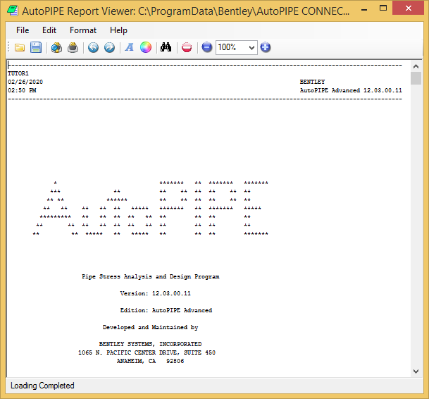

Reviewing the Report
The report opens in a separate window. Press the button to maximize the report window. Use the scroll bars to the right of the main text area to review each section of the report.

Notice that the report is divided into sections. Scroll to the Restraint Reactions, Code Compliance, and Result Summary sub-reports. Note that AutoPIPE conveniently summarizes all load cases and load combinations at each point, saving the user from having to search, case by case, for the highest loads at a given point.